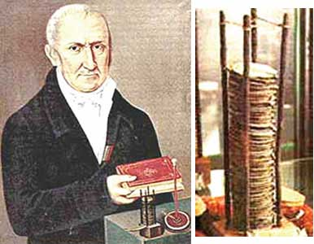
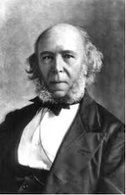
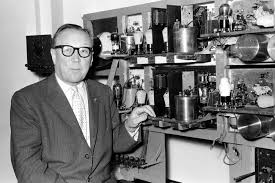
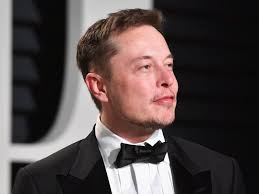

Alessandro Volta was a physicist, chemist and a pioneer of electrical science. He is most famous for his invention of the electric battery. Invented the first electric battery – which people then called the “voltaic pile” – in 1800. Using his invention, scientists were able to produce steady flows of electric current for the first time, unleashing a wave of new discoveries and technologies. He was the first person to isolate methane. He discovered methane mixed with air could be exploded using an electric spark: this is the basis of the internal combustion engine. He Discovered “contact electricity” resulting from contact between different metals. Recognized two types of electric conduction. He wrote the first electromotive series. This showed, from highest to lowest, the voltages that different metals can produce in a battery. He also discovered that electric potential in a capacitor is directly proportional to electric charge.
The first fax machine was invented by a brilliant Scottish clockmaker named Alexander Bain who used chemical technology to send the world’s first picture-by-wire using analog telegraph technology in 1842. The Bain system used a chemically treated roll of paper whose color would change to blue wherever electricity was passed through it. Timed by a pendulum, a stylus would move over an advancing roll of this paper, passing the telegraph’s electric signal through the paper as it went, thereby drawing out the dots and dashes of the signal. After gaining some wider attention, this invention incurred the wrath of Samuel Morse, who made the borderline claim that it infringed on his famous patent. Morse managed to block the progress of Bain’s invention with a legal injunction.
The first stationary gasoline engine developed by Carl Benz was a one-cylinder two-stroke unit which ran for the first time on New Year’s Eve 1879. Benz had so much commercial success with this engine that he was able to devote more time to his dream of creating a lightweight car powered by a gasoline engine, in which the chassis and engine formed a single unit.The major features of the two-seater vehicle, which was completed in 1885, were the compact high-speed single-cylinder four-stroke engine installed horizontally at the rear, the tubular steel frame, the differential and three wire-spoked wheels. The engine output was 0.75 hp (0.55 kW). Details included an automatic intake slide, a controlled exhaust valve, high-voltage electrical vibrator ignition with spark plug, and water/thermo siphon evaporation cooling.

Sir Robert Watson-Watt pioneered the technology that helped win the Battle of Britain, and was knighted for it in 1942 - but outside of his birthplace in Brechin, few people today remember his name. Radio detection and ranging, radar for short, is now used to keep passengers safe by detecting the flight path of every commercial aero plane in the world, but it was developed as the threat of World War Two became more acute to warn of enemy planes on the move. During the conflict, radar arrays gave the Royal Air Force a crucial edge in detecting and repelling the Nazi Luftwaffe but the man who was honored for their development has been oddly uncelebrated since. Watson-Watt, a descendant the celebrated engineer and inventor of the steam engine James Watt, was born in Brechin in Angus on 13 April 1892.His earliest work after graduating from University College, Dundee - then part of the University of St Andrews - was as a meteorologist, using radio waves to locate thunderstorms from his base at the Royal Aircraft Factory in Farnborough in Hampshire. Even then, in 1915, Watson-Watt was already using radio technology to provide advance warning to airmen.
Elon Reeve Musk is a South African-born American entrepreneur and businessman who founded X.com in 1999 (which later became PayPal), SpaceX in 2002 and Tesla Motors in 2003. Musk became a multimillionaire in his late 20s when he sold his start-up company, Zip2, to a division of Compaq Computers. In addition to his primary business pursuits, Musk has envisioned a high-speed transportation system known as the hyperloop, and has proposed a vertical takeoff and landing supersonic jet with electric fan propulsion, known as the Musk electric jet. Musk has stated that the goals of SpaceX, Tesla, and SolarCity revolve around his vision to change the world and humanity.]His goals include reducing global warming through sustainable energy production and consumption, and reducing the risk of human extinction by establishing a human colony on mars. He was also on meme review although I won't fret to mention any other celebs that were in da show.
